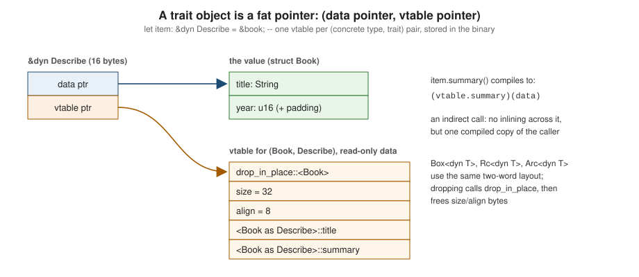

Trait Objects & dyn Compatibility
|
This content was generated with the assistance of AI and should be verified against the official documentation before being relied on in production. |
This page is written against Rust 1.99.0 and the 2024 edition, checked on 2026-10-06. Generic code (see
Traits) is resolved at compile time: each concrete type gets its own
compiled copy. Sometimes you need the opposite — a collection of different types that share a trait, a plugin chosen
at run time, or simply less generated code. A trait object, written dyn Trait, provides that dynamic dispatch:
the concrete type is erased, and method calls go through a table of function pointers.
dyn Trait and the pointers that hold it
dyn Describe means "some type that implements Describe`". Because its size is unknown at compile time, it is a
dynamically sized type and always lives behind a pointer: `&dyn Describe, &mut dyn Describe, Box<dyn Describe>,
Rc<dyn Describe> or Arc<dyn Describe>.
trait Describe {
fn summary(&self) -> String;
}
struct Book {
title: String,
}
struct Dvd {
title: String,
minutes: u32,
}
impl Describe for Book {
fn summary(&self) -> String {
format!("book: {}", self.title)
}
}
impl Describe for Dvd {
fn summary(&self) -> String {
format!("dvd: {} ({} min)", self.title, self.minutes)
}
}
fn print_all(items: &[Box<dyn Describe>]) {
for item in items {
println!("{}", item.summary()); // dynamic dispatch through the vtable
}
}
fn main() {
let items: Vec<Box<dyn Describe>> = vec![
Box::new(Book { title: "Dune".into() }),
Box::new(Dvd { title: "Arrival".into(), minutes: 116 }),
];
print_all(&items);
let one: &dyn Describe = &Book { title: "Emma".into() };
println!("{} -- size of &dyn: {}", one.summary(), size_of::<&dyn Describe>()); // 16
}Since the 2021 edition, the dyn keyword is mandatory; bare Box<Trait> is an error.
Vtables and fat pointers
A pointer to a trait object is a fat pointer of two words: a pointer to the data, and a pointer to a vtable — a static table that the compiler emits for each (concrete type, trait) pair. The vtable holds the type’s destructor, its size and alignment, and one function pointer per trait method:

The vtable layout is unspecified and not a stable ABI; do not rely on it.
Static versus dynamic dispatch
Generics / impl Trait (static) |
dyn Trait (dynamic) |
|
|---|---|---|
Resolved |
at compile time, per concrete type |
at run time, through the vtable |
Call cost |
direct call, inlinable |
indirect call, rarely inlined |
Code size |
one copy per type (monomorphization) |
one copy |
Heterogeneous collections |
no: a |
yes: |
Compile time |
longer with many instantiations |
shorter |
Trait requirements |
any trait |
must be dyn-compatible |
Neither is "better": prefer generics in hot paths and libraries where callers benefit from inlining, and trait
objects for plugin-style extensibility, heterogeneous collections, reducing compile times, and keeping types simple
(Arc<dyn BookRepo> in application state is a common pattern in the axum section). An enum is often a third option
when the set of types is closed and known.
dyn compatibility (formerly "object safety")
Only some traits can be used as dyn Trait. The Reference calls such traits dyn-compatible; older books and error
messages called them object-safe. The term changed in 2024 because "object safety" suggested a soundness property.
The rules, roughly: a trait is dyn-compatible if
-
it does not require
Self: Sized; -
all of its supertraits are dyn-compatible;
-
it has no associated constants and no generic associated types;
-
every method is dispatchable — it has a receiver (
&self,&mut self,self: Box<Self>,Rc<Self>,Arc<Self>,Pin<P>), does not useSelfby value in arguments or return type, has no type parameters, and does not returnimpl Traitor useasync fn— or it opts out withwhere Self: Sized.
Using a non-dyn-compatible trait as an object is error E0038:
trait Duplicate {
fn duplicate(&self) -> Self; // returns Self by value
}
impl Duplicate for String {
fn duplicate(&self) -> Self {
self.clone()
}
}
fn main() {
let items: Vec<Box<dyn Duplicate>> = Vec::new(); // error[E0038]: the trait `Duplicate` is not dyn compatible
println!("{}", items.len());
}Clone itself is not dyn-compatible (fn clone(&self) -> Self), which is why you cannot write Box<dyn Clone>;
the dyn-clone crate provides the usual workaround.
where Self: Sized escape hatches
A method marked where Self: Sized is excluded from the vtable: it can be called on concrete types but not on trait
objects, and it no longer stops the trait from being dyn-compatible. This is how Iterator can have generic adapter
methods (map, filter, collect) and still be used as dyn Iterator:
trait Describe {
fn summary(&self) -> String;
// Generic method: not dispatchable, so exclude it from the vtable.
fn summary_with<F: Fn(&str) -> String>(&self, f: F) -> String
where
Self: Sized,
{
f(&self.summary())
}
// Returns Self: also excluded.
fn boxed(self) -> Box<dyn Describe>
where
Self: Sized + 'static,
{
Box::new(self)
}
}
struct Book(String);
impl Describe for Book {
fn summary(&self) -> String {
self.0.clone()
}
}
fn main() {
let b = Book("Dune".into());
println!("{}", b.summary_with(|s| s.to_uppercase())); // fine on a concrete type
let obj: Box<dyn Describe> = b.boxed();
println!("{}", obj.summary()); // fine on the object
// obj.summary_with(|s| s.into()); // would not compile: the method requires `Self: Sized`
}Generic methods versus associated types
A generic method (fn get<K: Into<String>>(&self, k: K)) cannot be dispatchable, because the vtable would need an
entry for every possible K. Associated types are fine, but must be fixed in the object type:
Box<dyn Iterator<Item = u32>>, &dyn Repository<Key = String, Item = Book>. When designing a trait that should work
as an object, make methods take concrete types (&str instead of impl AsRef<str>), and provide generic conveniences
as where Self: Sized methods or free functions (Azam, Advanced Rust, chapter 7, discusses this trade-off).
Multi-trait objects and auto traits
A trait object type can name one non-auto trait plus any number of auto traits (Send, Sync, Unpin,
UnwindSafe, …) and a lifetime: Box<dyn Describe + Send + Sync + 'static>. Combining two ordinary traits
(dyn Describe + Display) is error E0225; define a supertrait that
combines them instead:
use std::fmt::{Debug, Display};
use std::sync::Arc;
trait Item: Display + Debug {}
impl<T: Display + Debug> Item for T {} // blanket impl: anything Display + Debug is an Item
fn main() {
let shared: Arc<dyn Item + Send + Sync> = Arc::new("Dune");
let handle = {
let shared = Arc::clone(&shared);
std::thread::spawn(move || format!("{shared} / {shared:?}")) // needs Send + Sync
};
println!("{}", handle.join().unwrap());
}The default lifetime of a boxed trait object is 'static (Box<dyn Trait> means Box<dyn Trait + 'static>),
and for a reference it is the reference’s lifetime. A Box<dyn Trait> is not Send unless you write + Send, which
is the usual cause of "future cannot be sent between threads safely" errors in async code.
Trait upcasting (1.86)
Since Rust 1.86, a trait object can be upcast to a trait object of one of its supertraits: &dyn Sub coerces to
&dyn Super, and likewise for Box, Rc and Arc. The vtable for Sub contains what is needed to produce the
Super vtable:
use std::any::Any;
use std::fmt::Debug;
trait Media: Debug + Any {
fn title(&self) -> &str;
}
#[derive(Debug)]
struct Book {
title: String,
}
impl Media for Book {
fn title(&self) -> &str {
&self.title
}
}
fn log_debug(item: &dyn Debug) {
println!("{item:?}");
}
fn main() {
let item: Box<dyn Media> = Box::new(Book { title: "Dune".into() });
log_debug(&*item); // upcast &dyn Media -> &dyn Debug
let any: &dyn Any = &*item; // upcast to &dyn Any ...
if let Some(book) = any.downcast_ref::<Book>() { // ... and downcast to the concrete type
println!("found book {}", book.title());
}
}Before 1.86, getting from &dyn Media to &dyn Any required an as_any(&self) -> &dyn Any method in every
implementation — the boilerplate pattern shown in Azam’s Advanced Rust (chapter 8). It is no longer necessary; see
Any & Downcasting.
async fn in traits and dynamic dispatch
A trait with async fn methods (stable since 1.75) is not dyn-compatible: each implementation returns a different,
unnamed future type, so the vtable cannot have a single entry type for the method. Two workarounds are common:
-
the
async-traitcrate rewritesasync fninto methods returningPin<Box<dyn Future<Output = T> + Send + '_>>, which is dyn-compatible at the cost of one allocation per call; -
writing that boxed signature by hand, which is what the macro generates.
use std::future::Future;
use std::pin::Pin;
use std::sync::Arc;
type BoxFuture<'a, T> = Pin<Box<dyn Future<Output = T> + Send + 'a>>;
trait BookRepo: Send + Sync {
fn title(&self, isbn: &str) -> BoxFuture<'_, Option<String>>; // dyn-compatible
}
struct InMemory;
impl BookRepo for InMemory {
fn title(&self, isbn: &str) -> BoxFuture<'_, Option<String>> {
let found = (isbn == "978").then(|| "Dune".to_string());
Box::pin(async move { found })
}
}
#[tokio::main(flavor = "current_thread")]
async fn main() {
let repo: Arc<dyn BookRepo> = Arc::new(InMemory); // usable as a trait object, e.g. in axum state
println!("{:?}", repo.title("978").await);
}Native support for dynamic dispatch of async fn in traits is being designed but is not stable; until it is, use
async fn in traits for static dispatch and boxed futures where you need dyn. See
Async/Await & Futures.
On-stack dynamic dispatch
Trait objects do not require a heap allocation. When a value is chosen at run time but used only locally, you can
borrow it as &dyn Trait from a temporary. Since Rust 1.79, temporary lifetime extension also applies to the
branches of if and match, so this works without declaring a variable for every possible value in advance:
use std::io::{self, Write};
fn main() -> io::Result<()> {
let to_stderr = std::env::args().any(|a| a == "--stderr");
let out: &mut dyn Write = if to_stderr { &mut io::stderr() } else { &mut io::stdout() };
writeln!(out, "catalogue report")?;
Ok(())
}Common errors
| Error | Cause and fix |
|---|---|
E0038 not dyn compatible |
a method returns |
E0225 only auto traits can be additional traits |
combine the traits in a supertrait |
E0277 the size for values of type |
put
the trait object behind a pointer: |
E0277 |
add |
E0782 trait objects must include the |
edition 2021+: write |
Where the books are outdated
Azam (Advanced Rust, chapters 7 and 8) uses the term "object safety", which the Reference and compiler messages
have replaced with dyn compatibility, and shows the as_any workaround for converting to &dyn Any, which trait
upcasting (1.86) makes unnecessary. Yoon (Beginning Axum) and older axum tutorials use the async-trait macro for
every async trait; with native async fn in traits, the macro is only needed where dynamic dispatch is required.
References
-
The Rust Programming Language: Using Trait Objects to Abstract over Shared Behavior
-
The Rust Reference: Type coercions (unsized coercions, trait upcasting)
-
Rust Design Patterns: On-Stack Dynamic Dispatch (community)
-
Error E0038 and E0225